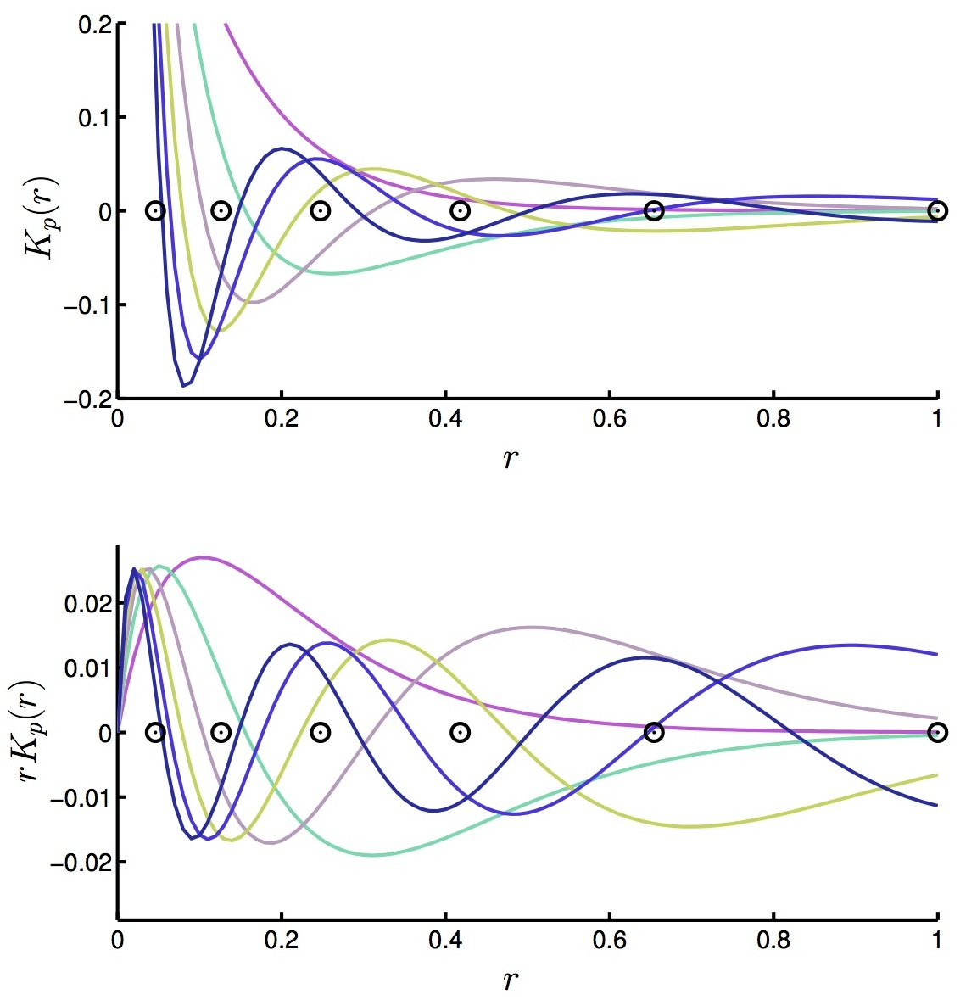
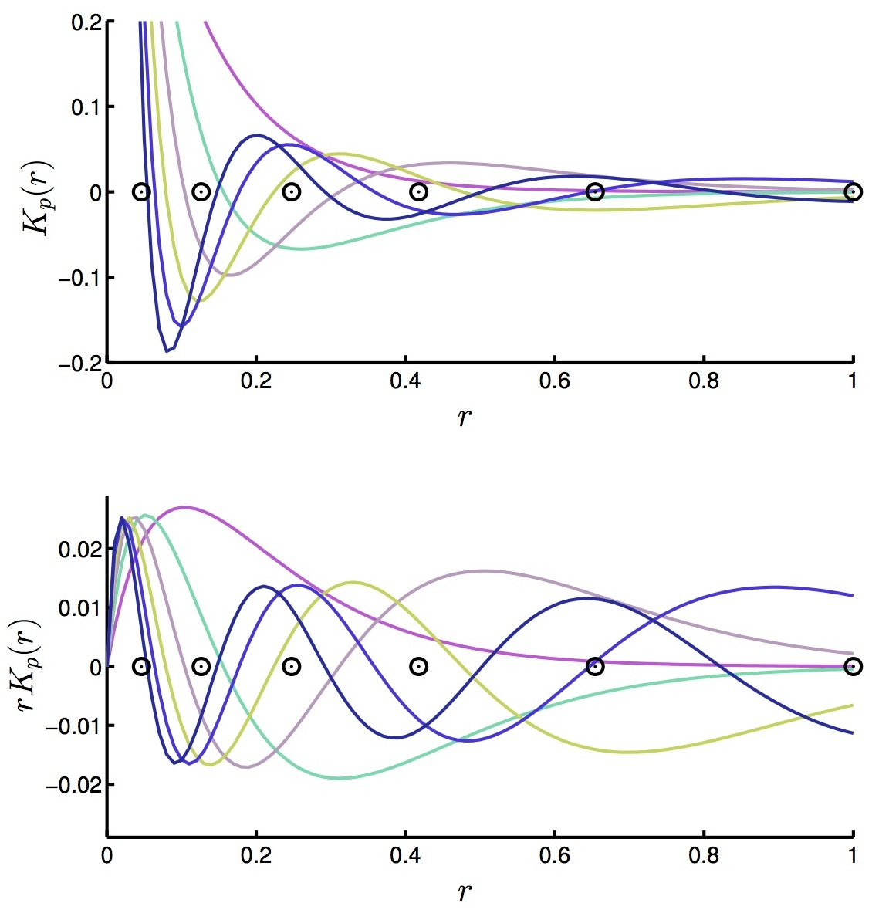

Introduction
The FLAG code implements the Fourier-Laguerre Transform, a novel 3D transform exploiting an exact quadrature rule of the ball to construct an exact harmonic transform in 3D spherical coordinates. The angular part of the Fourier-Laguerre transform uses the MW sampling (ArXiv | DOI) and the exact spherical harmonic transform implemented in the SSHT code. The radial sampling scheme arises from an exact quadrature of the radial half-line using damped Laguerre polynomials.
This page outlines the main features of FLAG, installation details as well as the core functionalties and interfaces. References, version, and license information then follows. FLAG requires the SSHT and FFTW libraries. The optional spherical Bessel features require GSL.
Wavelet transform on the sphere
The angular part of FLAG uses SSHT, a high-performance library for performing fast and exact Spherical Harmonics transform on the sphere on the McEwen-Wiaux (MW) equiangular sampling on the sphere. The radial part consist in the spherical Laguerre Transform that takes advantage of the Gauss-Laguerre quadrature and the rescaled Laguerre polynomials to decompose and reconstruct any radial function exactly. The quadrature nodes and the basis functions on the radial half-line are shown below.
 

We also provide an implementation of the analytic formula connecting the spherical Laguerre and the spherical Bessel transform. If a function a band-limited in the former, the latter can be calculated exactly. Consequently the Fourier-Bessel decomposition of a function which is band-limited in the Fourier-Laguerre basis can also be calculated exactly, without the use of any numerical integration routines.
Installation and documentation
The core functionalities of FLAG are written in C and self-documenting. The C library only requires SSHT and FFTW. The optional spherical Bessel and Fourier-Bessel routines require the GSL library. Interfaces are provided for all high-level routines in Matlab. Several examples, tests and demos are provided for the C library and the Matlab interfaces.
Dependencies
FLAG requires the SSHT and FFTW packages. Obviously suitable C and Fortran 90 compilers will be required to build the respective
implementations. Both C and Matlab mex compilers will be required
to build the Matlab interface.
Linking with GSL adds the spherical Bessel and Fourier-Bessel features.
Compiling
The instuctions and options to build the main C library are detailed here.
Note that we provided a makefile as well as a Cmake configuration file to facilitate cross-platform compilation.
Instuctions to build and use the Matlab interfaces are detailed here.
Source code documentation
FLAG ships with source and HTML documentation.
- The C documentation is generated by doxygen and available here.
- The Matlab routines that interface with the C implementation are self
documenting, and documentation can be access through the help command in
Matlab). HTML documentation is available here and was built with m2html.
Download
We make the source code of the FLAG package
available under the license described below.
To receive a copy of FLAG ...
Referencing
If you use FLAG for work that results in publication, please reference this site (http://www.jasonmcewen.org/) and our related academic paper:
B. Leistedt and J. D. McEwen, Exact wavelets on the ball, IEEE Trans. Sig. Proc., in press, 2012 (ArXiv | DOI).
Version
Current version: 1.0
Release date: September 2012
Previous versions:
- 0.9 (May 2012): Private release.
License
FLAG package to perform exact Fourier-Laguerre transform on the ball.
Copyright (C) 2012 Boris Leistedt & Jason McEwenThis program is free software; you can redistribute it and/or modify it under the terms of the GNU General Public License as published by the Free Software Foundation; either version 2 of the License, or (at your option) any later version.
This program is distributed in the hope that it will be useful, but WITHOUT ANY WARRANTY; without even the implied warranty of MERCHANTABILITY or FITNESS FOR A PARTICULAR PURPOSE. See the GNU General Public License for more details (LICENSE.txt).
You should have received a copy of the GNU General Public License along with this program; if not, write to the Free Software Foundation, Inc., 51 Franklin Street, Fifth Floor, Boston, MA 02110-1301, USA.
About the authors
FLAG was developed by Boris Leistedt and Jason McEwen at University College London (UCL).
 Boris Leistedt
Boris LeistedtAcademic web page » |
 Dr Jason McEwen
Dr Jason McEwenAcademic web page » |